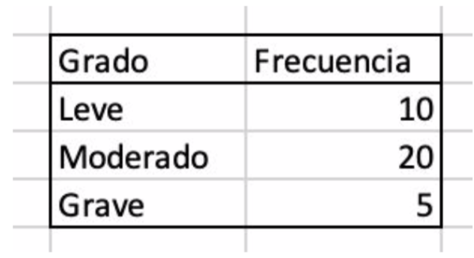
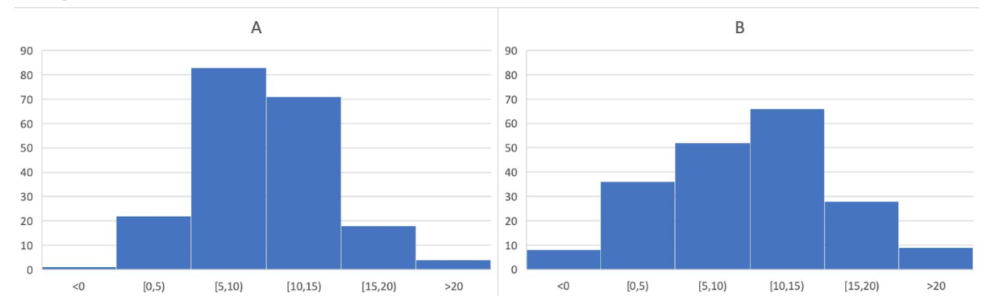
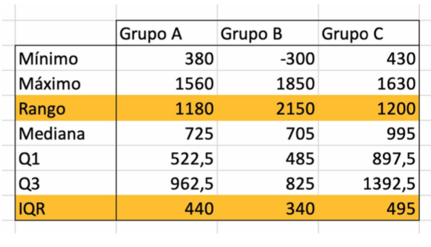

2.9 Medidas de posición, dispersión y forma
Cuando tenemos un conjunto de datos, podemos obtener información muy resumida de los mismos a través de una serie de valores. En este apartado veremos las siguientes medidas y valores:

2.9.1 Medidas de posición centrales
La media aritmética de un conjunto de datos numéricos es quizá la medida más intuitiva que tenemos todos en mente. Simplemente, se obtiene sumando los valores de todos los datos y se divide el valor obtenido entre el número de datos. Por ejemplo, para el siguiente conjunto de datos:
4, 5, 6, 9, 11, 13, 64
la media \(\overline{x}\) es 16:
\(\frac{4+5+6+9+11+13+64}{7}=16\)
La expresión matemática, siendo \(x_i\) los valores, n el número de datos y \(f_i\) la frecuencia absoluta es:
\(\overline{x}=\frac{\sum_{i=1}^{n}x_i}{n}= \frac{1}{n}\sum_{i=1}^{k}x_i\cdot f_i\)
La mediana es el valor que está justo en medio de todos los demás valores. Eso significa que la mitad de los valores son más altos y la mitad son más bajos que este valor, independientemente de cuánto más altos o bajos sean.
En el ejemplo anterior
4, 5, 6, 9, 11, 13, 64
tenemos 7 valores ordenados de menor a mayor. El 9 es el que ocupa el valor central por lo que la mediana es 9. Si el número de datos fuese par, habría 2 valores centrales por lo que la mediana se calcularía como la media aritmética de esos dos valores.
Así, en este sencillo ejemplo, vemos que la media es 15 y la mediana es 9. El valor 15 es intuitivamente una sobreestimación ya que sólo uno de los valores (64) es más grande que él, lo que hace que de alguna manera no sea representativo de los otros valores. Es por esto que siempre es interesante calcular media y mediana en un conjunto de datos. Además, algunos test estadísticos se aplican sobre la mediana.
La moda es el valor que más se repite y se suele utilizar para describir variables cualitativas. Puede haber más de una moda. En este ejemplo sobre el grado de una enfermedad:

la moda es “Moderado”. En este otro conjunto de datos:
5, 6, 7, 8, 9, 11, 5, 3, 2, 4, 5, 5, 9, 10, 5, 11
la moda es 5.
2.9.2 Medidas centrales (Práctica)
Para realizar esta práctica, debe tener descargado en su ordenador el archivo 1.practicas.xlsx y abrir la hoja/pestaña correspondiente.
En el siguente vídeo se muestran los pasos para realizar la práctica.
2.9.3 Medidas de posición no centrales
El cuantil de orden p de un conjunto de datos es un valor tal que la proporción de valores menores que él es p. De este modo, la mediana es el cuantil más conocido ya divide la muestra en dos partes de proporción 0.5 (50%). Así, la mediana es un cuantil de orden 0.5.
Los cuartiles dividen al conjunto de datos en 4 partes, cada una de ellas de frecuencia 25%. Se denotan por \(Q_1\), \(Q_2\) y \(Q_3\). Así, el porcentaje de valores menores que \(Q_1\) es el 25%, el porcentaje de valores menores que \(Q_2\) es el 50% (\(Q_2\) es la mediana) y el porcentaje de valores menores que \(Q_3\) es el 75%.
Si dividimos la muestra, el conjunto de datos en 100 partes iguales, obtenemos los percentiles, que van de \(p_1\) a \(p_{99}\). De nuevo, la mediana coincide con el percentil 50 y los cuartiles \(Q_1\) y \(Q_3\) coinciden con \(p_{25}\) y \(p_{75}\) respectivamente.
2.9.4 Medidas no centrales (Práctica)
Para realizar esta práctica, debe tener descargado en su ordenador el archivo 1.practicas.xlsx y abrir la hoja/pestaña correspondiente.
En el siguente vídeo se muestran los pasos para realizar la práctica.
2.9.5 Medidas de dispersión
Este tipo de medidas nos dan información sobre si nuestro conjunto de datos tiene mucha variabilidad o no, es decir, si los datos están muy dispersos o concentrados en torno a las medidas centrales.
Veamos intuitivamente qué información nos aportan las medidas de dispersión. Si vemos los histogramas de estas dos distribuciones de 200 datos cada una:

en ambos casos la media es 9.8. Las escalas son iguales y podemos observar que en la distribución A, los valores están más agrupados en torno a la media que en la distribución B donde están más separados, más “dispersos”. Las medidas de dispersión son números que concretan esta idea.
El rango es la diferencia entre el máximo valor y el mínimo valor de un conjunto de datos.
El rango intercuartílico (IQR) es la diferencia entre el cuartil 3 y el cuartil 1, es decir, indica la amplitud del intervalo en el que está el 50% de los datos. Es un dato que complementa a la mediana.
El dato del rango intercuartílico y la mediana permite hacer una representación gráfica de los datos mediante los diagramas de cajas y bigotes (boxplot o box and whisker plot) además de localizar datos atípicos (outliers).
En el ejemplo utilizado para la media y la mediana:
4, 5, 6, 9, 11, 13, 64
comprobamos que el valor 64 es un dato atípico (outlier) ya que está muy distante del resto.
Veamos otro ejemplo. En esta tabla

tenemos 30 datos distribuidos en 3 grupos. Podemos obtener el rango y el rango intercuartílico:

y los diagramas de cajas y bigotes de estas 3 distribuciones de datos:

Al estar en sentido vertical, en cada caso el valor inferior de la caja corresponde a \(Q_1\) y el superior a \(Q_3\). Así, la longitud de la caja es el rango intercuartílico. La línea en la caja es el valor de la mediana y aparece el valor de la media con una X. Para los datos A y C, los extremos de los bigotes corresponden a los valores máximo y mínimo. En el caso de los datos B, vemos 2 puntos arriba y abajo correspondientes a 2 valores atípicos. Hay varias formas de calcular la longitud de los bigotes. Uno de ellos es considerar que un valor es atípico si se encuentra 1.5 veces de la longitud de la caja.
La varianza es la medida de dispersión más utilizada en estadística ya que tiene en cuenta la distancia, la diferencia de todos los valores con respecto a la media.
Si a cada dato le restamos la media y sumamos todos esos resultados, es fácil comprobar que vamos a obtener 0:
\(\sum(x_i-\overline{x})=0\)
ya que al sumarse las diferencias de los datos superiores, positivas al ser mayores de la media, éstas se van a anular con las inferiores, negativas al ser menores que la media.
Una solución es tomar todos esas diferencias con signo positivo, es decir, en valor absoluto. Así obtenemos ladesviación media:
\(D=\frac{\sum|x_i-\overline{x}|}{n}\)
Sin embargo, esta solución conlleva algunos problemas técnicos al considerarse positivos números que, en realidad, son negativos.
Para analizar eficientemente las diferencias a la media, la idea es elevar esas diferencias al cuadrado, obteniéndose así siempre números positivos. Por otro lado, al elevar al cuadrado se ponderan los valores cercanos y lejanos a la media. De este modo, se calcula la media de los cuadrados de las diferencias de los datos a la media. Esa es la varianza:
\(s^2=\frac{\sum(x_i-\overline{x})^2}{n}\)
Así, la unidad de medida de la varianza es la unidad de medida que con la que estemos trabajando elevada al cuadrado (pulsaciones al cuadrado, peso al cuadrado, etc.).
La varianza también puede obtenerse como:
$s^2= - ^2 $
En este caso, se calculan los cuadrados de los datos, se suman y se divide entre el número de datos. Al resultado se le resta el cuadrado de la media.
La unidad de medida de la varianza es la unidad de medida de los datos elevada al cuadrado. Para utilizar la misma unidad de medida que los datos, se define la desviación típica o estándar como la raíz cuadrada de la varianza. Se suele denotar por s (si es relativa una muestra) o con la letra griega sigma minúscula (si es relativa a toda la población):
\(\sigma=\sqrt{\frac{\sum(x_i-\overline{x})^2}{n}}\)
La desviación típica es un complemento de la media ya que indica el grado de dispersión de los datos respecto al centro de los datos, respecto a la media.
La desigualdad de Chevyshev es ampliamente utilizada para distinguir datos que se separan “excesivamente” de la media. Cuando sabemos que los datos toman valores “normales” como los resultados de un análisis de sangre, podemos establecer que:
en el intervalo \((\overline{x}-2\sigma, \overline{x}+2\sigma)\) están, al menos, el 75% de los datos
en el intervalo \((\overline{x}-3\sigma, \overline{x}+3\sigma)\) están, al menos, el 88% de los datos.
Finalmente, podemos considerar esa desviación en porcentaje para poder comparar conjuntos de datos con distintas medias. Obtenemos el coeficiente de variación dividiendo la desviación típica entre la media y multiplicando el resultado por 100:
\(C.V.=\frac{\sigma}{n}\cdot 100\)
2.9.6 Medidas de dispersión (Práctica)
Para realizar esta práctica, debe tener descargado en su ordenador el archivo 1.practicas.xlsx y abrir la hoja/pestaña correspondiente.
En el siguente vídeo se muestran los pasos para realizar la práctica.